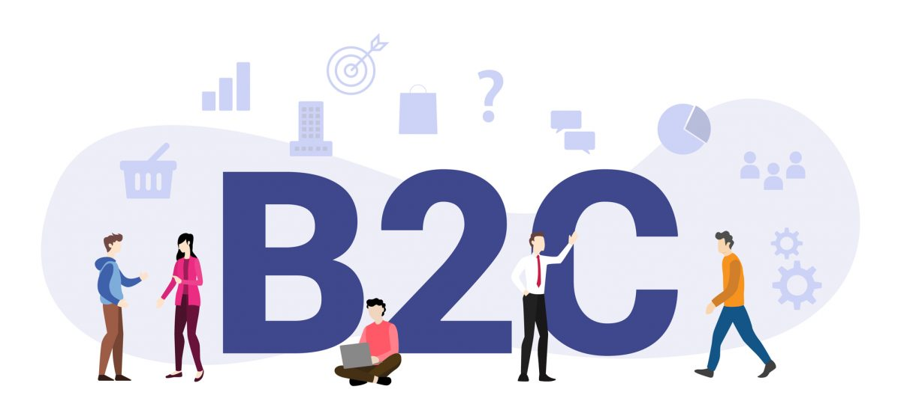
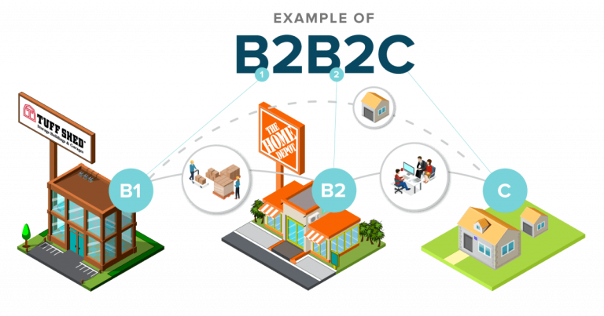
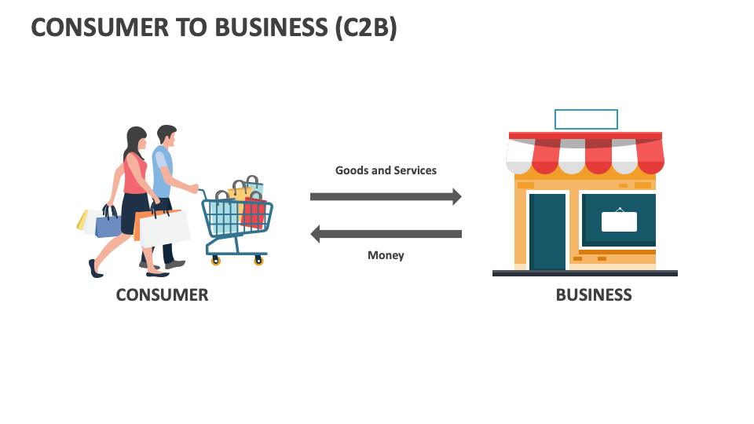
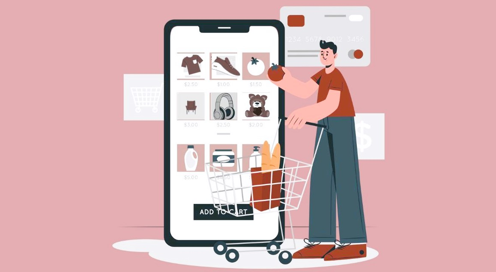
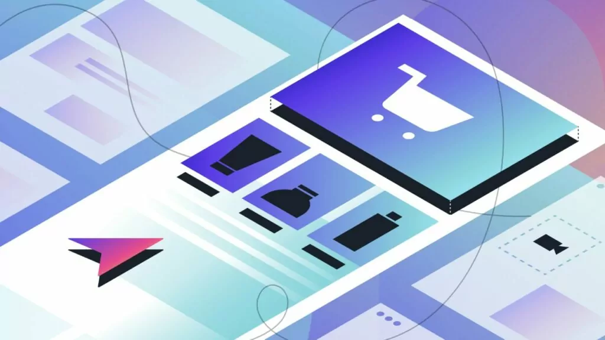

روند های تجارت الکترونیک
زمان خواندن: 20 دقیقه
فهرست مطالب
تجارت الکترونیک چگونه کار میکند؟
یک سایت تجارت الکترونیک باید چه ویژگی هایی داشته باشد؟
5 چارچوب دلیوری برتر برای انواع تجارت الکترونیک
چگونه یک تجارت الکترونیک را از ابتدا در 5 مرحله راه اندازی کنیم
تجارت الکترونیک چیست؟
.png)
، تجارت الکترونیک یا e-Commerce به معنی فرایند خرید و فروش محصولات و سرویسهای محسوس در فضای آنلاین است. برای اینکه چنین تراکنشی انجام شود، نیاز به حداقل دو طرف داریم که داده یا پول را با یکدیگر تبادل میکنند. تجارت الکترونیک ضمنا از زیر مجموعههای صنعتی بزرگتر به حساب میآید که تحت عنوان «کسبوکار الکترونیک» (e-Business) شناخته میشود و تمام فرایندهای مورد نیاز برای اداره کردن یک شرکت را به صورت آنلاین در خود جای میدهد.
تجارت الکترونیک را در واقع میتوان نسخه دیجیتالی خریدهای کاتالوگی به حساب آورد. این حوزه که به عنوان تجارت آنلاین نیز شناخته میشود، تماما راجع به تراکنشهای میان خریداران و فروشندگانی است که از تکنولوژی استفاده میکنند.
تجارت الکترونیک نحوه خرید و مصرف محصولات و سرویسها را هم از سوی مردم کاملا دگرگون کرده است. با گذشت هر روز، افراد بیشتر و بیشتری از کامپیوتر و موبایل هوشمند خود برای سفارش آنلاین محصولاتی استفاده میکنند که درست درب منزل تحویل داده میشوند. دقیقا به همین دلیل، چشمانداز صنعت خردهفروشی فیزیکی هم مختل شده است. شرکتهایی مانند آمازون و علیبابا به محبوبیتی شگرف در سراسر جهان رسیدهاند و خردهفروشان سنتی را مجبور به پیادهسازی تغییرات اساسی در رویکردهای خود کردهاند.
اما این تمام ماجرا نیست. فروشندگان منفرد نیز که نمیخواستند از قافله جا بمانند، از طریق وبسایتهای شخصی خود به تراکنشهای مبتنی بر تجارت الکترونیک روی آوردند. از سوی دیگر بازارهای دیجیتالی بزرگی مانند eBay و Etsy هم از راه رسیدند که نقش واسطه را برای بیشمار خریدار و فروشنده ایفا میکنند.
تاریخچه تجارت الکترونیک
همه ما در طول زندگی خود چیزی را به صورت آنلاین خریداری کردهایم و این یعنی در تجارت الکترونیک نقش داشتهایم. بنابراین نیازی به اشاره نیست که رد پای تجارت الکترونیک را میتوان تقریبا در همهجا پیدا کرد. اما افراد بسیار کمی میدانند که تاریخچه تجارت الکترونیک به دوران پیش از ظهور اینترنت بازمیگردد.
قدمت تجارت الکترونیک در حقیقت به دهه ۱۹۶۰ میلادی بازمیگردد، زمانی که شرکتها از سیستمی الکترونیکی به نام Electronic Data Interchange برای تسهیل فرایند انتقال اسناد استفاده میکردند. با این حال در سال ۱۹۹۴ اولین تراکنش انجام شد که فروش یک سیدی میان دو دوست در وبسایت خردهفروشی آنلاینی به نام NetMarket.3 بود.
از آن زمان، این صنعت تغییرات زیادی به خود دیده و تکامل فراوان پشت سر گذاشته است. خردهفروشیهای سنتی مجبور به در آغوش کشیدن تکنولوژیهای جدید شدند تا بتوانند برابر کمپانیهای بزرگ دوام بیاورند. داریم درباره کمپانیهایی صحبت میکنیم که بازارهای مجازی عظیمی برای کالاها و خدماتی که به راحتی در دسترس قرار دارند، ساختند.
تکنولوژیهای جدید دائما به آسانتر شدن زندگی و تجربه خرید آنلاین مردم کمک میکنند. مردم اکنون میتوانند از طریق موبایلهای هوشمند و دیگر دستگاههای مشابه به کسبوکارها متصل شوند، چه از طریق مرورگر وب و چه با خرید از طریق اپلیکیشن. ارسال رایگان هم که هزینههای مشتریان را کاهش میدهد، کمک شایانی به محبوبیت صنعت تجارت الکترونیک و ابعاد مربوط به استراتژی دیجیتال مارکتینگ کرده است.
تجارت الکترونیک چگونه کار میکند؟

تجارت الکترونیک بر اساس همان اصول فروشگاه فیزیکی کار می کند. مشتریان به فروشگاه تجارت الکترونیک شما می آیند، محصولات را مرور می کنند و خرید می کنند. تفاوت بزرگ این است که آنها مجبور نیستند برای انجام این کار از کاناپه خود بلند شوند و پایگاه مشتریان شما به یک منطقه یا منطقه جغرافیایی خاص محدود نمی شود.
چه در حال فروش کفش های مخصوص دویدن باشید و چه لوازم خانگی، هنگام راه اندازی یک وب سایت تجارت الکترونیک، فرآیند مشابهی را طی می کنید:
- قبول سفارش مشتری در وب سایت یا پلت فرم تجارت الکترونیک شما سفارش می دهد. به شما هشدار داده می شود که سفارشی ثبت شده است.
- سفارش را پردازش کنید. در مرحله بعد، پرداخت پردازش می شود، فروش ثبت می شود و سفارش کامل علامت گذاری می شود. تراکنش های پرداخت معمولاً از طریق چیزی که به عنوان دروازه پرداخت شناخته می شود پردازش می شود. آن را به عنوان معادل آنلاین صندوق نقدی خود در نظر بگیرید.
- سفارش را ارسال کنید. آخرین مرحله در فرآیند تجارت الکترونیک، حمل و نقل است. اگر مشتریان مکرر می خواهید، باید از تحویل سریع اطمینان حاصل کنید. به لطف آمازون، مصرف کنندگان عادت دارند کالاها را ظرف دو روز دریافت کنند.
برای نشان دادن نحوه عملکرد آن در عمل، در اینجا نگاهی به سفر یک محصول هنگام خرید آنلاین دارد:
- مشتری از فروشگاه آنلاین شما بازدید می کند و محصولات شما را مرور می کند. او روی یک پیراهن می نشیند. او اندازه و رنگ را انتخاب می کند و به سبد خرید اضافه می کند.
- مدیر سفارش یا نرم افزار مدیریت سفارش، موجود بودن محصول را تایید می کند.
- اگر محصول موجود باشد و مشتری آماده بررسی باشد، مشخصات کارت پرداخت و اطلاعات حمل و نقل خود را در فرم یا صفحه پرداخت شما وارد می کند.
- پردازشگر پرداخت که معمولاً یک بانک است، تأیید می کند که مشتری پول نقد کافی در بانک یا اعتبار کافی در کارت خود برای تکمیل تراکنش دارد.
- مشتری در وب سایت پیامی دریافت می کند که تراکنش انجام شده است. همه اینها در چند ثانیه اتفاق می افتد.
- سفارش از انبار ارسال و ارسال می شود. مشتری ایمیلی مبنی بر اینکه محصول برای تحویل است دریافت می کند.
- سفارش تحویل داده شد و معامله انجام شد.
انواع تجارت الکترونیک چیست؟
بسته به محصولات، خدمات و ساختار سازمانی شرکتی فعال در حوزه تجارت الکترونیک، کسبوکار مورد نظر میتواند حداقل شش مسیر مختلف را در پیش بگیرد. در ادامه این مقاله برخی از محبوبترین بومهای مدل کسبوکار را بررسی میکنیم.
کسبوکار به مصرفکننده

همانطور که از نامش پیداست، مدل «کسبوکار به مصرفکننده» (Business to Consumer | B2C) زمانی پدید میآید که یک شرکت، محصولات یا خدمات خود را مستقیما به کاربران نهایی میفروشد. این رایجترین شکل از تجارت در دنیای امروزی به حساب میآید. تجارت الکترونیک B2C ساختاری کاملا سرراست دارد. هر زمان که از سوپر مارکت خرید میکنید، هر زمان که غذایی در رستوران میخورید، هر زمان که به سینما میروید و هر زمان که موی خود را اصلاح میکنید یک تراکنش B2C به انجام میرسد. شما مشتری نهایی محصولات و خدماتی هستید که ارائه میشوند.
در جهان تجارت الکترونیک، پنج نوع مدل کسبوکار B2C مختلف داریم: فروشندگان مستقیم، واسطههای آنلاین، مدلهای تبلیغمحور، مدلهای جامعهمحور و مدلهای قیمتمحور.
- فروش مستقیم رایجترین مدل است و زمانی رقم میخورد که مصرفکنندگان، محصولات را از خردهفروشیهای آنلاین تهیه میکنند.
- واسطههای آنلاین هم کسبوکارهایی آنلاین هستند که فروشندگان و مصرفکنندگان را کنار هم آورده و در ازای این خدمات، مقداری از هر تراکنش را برای خود برمیدارند.
- در مدل تبلیغمحور، اطلاعات به صورت رایگان در اختیار کاربران قرار میگیرد و درآمدزایی از طریق نمایش تبلیغات روی سایت امکانپذیر میشود.
- شبکه اجتماعی فیسبوک را میتوان مثالی از یک وبسایت جامعهمحور به حساب آورد که با نمایش تبلیغات هدفمند اینترنتی و مرتبط به جمعیتشناسیهای گوناگون، درآمدزایی میکند.
- در نهایت مدل قیمتمحور هم شرکتهایی را در بر میگیرد که اطلاعات یا سرگرمی را در ازای قیمتی مشخص به مصرفکنندگان میفروشند، مانند سرویس استریم محتوای نتفلیکس.
طی سالهای اخیر، فروش کسبوکارهای آنلاین B2C با رشد قابل توجهی همراه بوده است. بسیاری از خردهفروشیهای سنتی و خشت و ملات (به معنای آنهایی که از طریق فروشگاههای فیزیکی فعالیت میکنند) یا به ورطه نابودی کشیده شدند و یا مسیری تازه برای خود ترسیم کرده و امکان خرید آنلاین را برای مشتریان خود فراهم آوردند.
این رویکرد ترکیبی یا به اصطلاح «هیبرید» زمانی رخ میدهد که شرکتها هم فروشگاههای فیزیکی خود را حفظ میکنند و هم پلتفرمی برای خرید آنلاین راه میاندازند. برای مثال اکنون کم نیستند شرکتهایی که اجازه میدهند محصولی را به صورت آنلاین خریده و سپس در یکی از فروشگاههای فیزیکی نزدیک خود، تحویل بگیرید. بسیاری شرکتها ضمنا اجازه میدهند که مشتریان محصولاتی که به صورت آنلاین خریدهاند را برای فروشگاههای محلی باز پس فرستاده و پول خود را استرداد کنند.
برای پیادهسازی موفقیتآمیز مدل تجاری B2C، کسبوکارها باید متکی بر پلتفرمی باشند که به سرعت دچار تغییر شده و بدون تاخیر در خدماترسانی، با نیازهای مشتریان تطبیق مییابد.
کسبوکار به کسبوکار
مدل «کسبوکار به کسبوکار» (Business to Business | B2B) زمانی پدید میآید که یک شرکت، محصولات یا خدمات خود را مستقیما به کسبوکارهای دیگر میفروشد. تجارت الکترونیک B2B را میتوان به دو روششناسی مختلف تقسیم کرد: عمودی و افقی.
کسبوکارهای محور عمودی، صرفا به مشتریان حاضر در صنعتی بهخصوص خدمترسانی میکنند. در رویکرد افقی اما میتوان محصولات و خدمات را در اختیار مشتریانی از صنایع گوناگون گذاشت. هرکدام از این رویکردها مزایا و معایب خاص خود را دارند و برای مثال میتوان به تخصص صنعتی و عمق بازار در رویکرد عمودی و پوشش گسترده بازار و تنوع مشتریان در رویکرد افقی اشاره داشت.
هر دو میتوانند مسیری بسیار سودآور برای شرکت شما ترسیم کنند، اما استراتژی شما کاملا وابسته به محصولات و مشتریان شما خواهد بود و بنابراین باید آنها را به دقت انتخاب کرده و بچینید.
کسبوکارهای B2B در طول تاریخچه خود همواره چند قدم از همتایانی که فروش مستقیم به مصرفکنندگان دارند عقبتر ماندهاند، خصوصا وقتی صحبت از ابتکار تجاری و فروش دیجیتال باشد. مشکل را میتوان عمدتا در مذاکره ها بر سر قیمت و همکاری جستجو کرد و بسیاری از کسبوکارها به اتکا بر نمایندگان فروشی که اصلیترین کانالهای درآمدزایی را فراهم میآوردند، عادت داشتند.
خریداران B2B مدرن حسابی از تکنولوژی سر در میآورند و همان خواستهها و عادات خرید مصرفکنندگان معمولی را دارند. سهولت در استفاده، انعطافپذیری، سفارشیسازی و به دست آوردن تجربهای یکپارچه، جزو بنیادینترین انتظارات مشتریان به حساب میآیند و باید توجهی ویژه به تجربه کاربر نشان داد.
کسبوکار به دولت
.png)
مدل «کسبوکار به دولت» (Business to Government | B2G) به معنای حالتی است که یک شرکت، محصولات و سرویسهای خود را به صورت مستقیم در اختیار یک آژانس دولتی میگذارد. این آژانس میتواند آژانس محلی، استانی، کشوری یا فدرال باشد.
به عنوان مثالی از ارتباط B2G میتوان به تولیدکنندگان مهماتی اشاره کرد که مهمات ارتش ایالات متحده را تامین میکنند. مثالی از ارتباط B2G محلی هم میتواند یک شرکت مهندسی خصوصی باشد که خدمات مهندسیاش را در اختیار دولت محلی میگذارد تا امکان توسعه سیستم آب و فاضلابی جدید مهیا شود. در مدل B2G، شرکتها معمولا پروژهها را از طریق مزایدههای دولتی به دست آورده و عهدهدار میشوند.
طبیعی است که ارتباط با آژانسهای دولتی، تفاوتهایی بزرگ با همکاری با دیگر کسبوکارها یا مصرفکنندگان دارد. از آنجایی که باید تشریفات اداری گستردهای را پشت سر گذاشت، قراردادهای این حوزه با سرعت بسیار کندتری نسبت به دیگر بازارها پیش میروند.
نکته مهم اینکه برخلاف بسیاری از تراکنشهای B2C، آژانسهای دولتی مستقیما وارد یک وبسایت تجارت الکترونیک نشده و سفارش خود را بدین شکل ثبت نمیکنند. هرچند که میتوان استثناهایی را نیز یافت. برای مثال یک آژانس دولتی محلی ممکن است از شرکتی فعال در حوزه تجارت الکترونیک بخواهد که به تعمیر تجهیزاتی بهخصوص بپردازد. در واقع فاکتورهای مختلفی بر جنس روابط B2G تاثیر میگذارند که از جمله آنها میتوان به ابعاد آژانس مورد نظر و همینطور نیازهای آن اشاره کرد.
کسبوکار به کسبوکار به مصرفکننده

از میان انواع تجارت الکترونیک، مدل «کسبوکار به کسبوکار به مصرفکننده» (Business to Business to Consumer | B2B2C) به حالتی گفته میشود که یک شرکت، محصول خود را به شرکتی دیگر میفروشد که آن نیز به فروش به مصرفکنندگان میپردازد. یک مثال از B2B2C میتواند توافقی باشد که میان یک توزیعکننده عمده و فروشگاههای خردهفروشی مختلف شکل میگیرد تا محصولات را به دست مشتریان نهایی برساند. مدل B2B2C از سه بخش تشکیل شده است: کسبوکار نخست (یا کسبوکار مبدا محصول)، واسطه و مشتری نهایی.
به روشهای مختلفی میتوان مدل کسبوکار B2B2C را در دنیای تجارت الکترونیک پیادهسازی کرد. برای مثال یک شرکت میتواند برای تبلیغ محصولات و خدمات خود به همکاری با شرکتی دیگر مشغول شده و مقداری از سهم هر فروش را در اختیار آن بگذارد. اصلیترین مزیت مدل کسبوکار B2B2C برای شرکتهای فعال در حوزه تجارت الکترونیک این است که میتوانند مشتریانی تازه به دست آورند. بنابراین شرکتهای تازهتاسیسی که به دنبال راهی برای گسترش سریع جامعه مشتریان میگردند میتوانند این نکته را مد نظر داشته باشند.
مصرفکننده به مصرفکننده
.png)
یکی دیگر از مدلهای کسبوکاری که مردم معمولا به آن فکر نمیکنند، مدل «مصرفکننده به مصرفکننده» (Consumer to Consumer | C2C) است. چشمانداز نویدبخش فضای دیجیتال اصلیترین چیزی بوده که به شکلگیری و موفقیت این حوزه کمک کرده است و اکنون شرکتهایی مانند eBay و Craigslist و همینطور Etsy از بزرگترین بازیگران آن به حساب میآیند.
در دنیای تجارت الکترونیک C2C، مصرفکنندگان میتوانند محصولات و خدمات را مستقیما به سایر مصرفکنندگن بفروشند. این کار معمولا از طریق وبسایتهای شخص ثالث - مانند مواردی که در بالا به آنها اشاره کردیم - یا فروشگاههایی انجام میشود که فرایند تراکنش را برای خریدار و فروشنده تسهیل میکنند. در نهایت باید گفت که این فروشگاههای تجارت الکترونیک به کسبوکارهای کوچک یا افراد کمک میکنند که محصولاتشان را با قیمت دلخواه خود بفروشند، آن هم بدون اینکه نیازی به راهاندازی فروشگاهی مجزا داشته باشند.
مصرفکننده به کسبوکار

معمولا وقتی به استراتژیهای تجاری فکر میکنیم، به آنها به چشم استراتژیهایی نگاه میکنیم که مبدایی به جز کسبوکارهای مختلف ندارند. اما جالب است بدانید که مدلهای مصرفکننده محور مانند مدل «مصرفکننده به کسبوکار» (Consumer to Business | C2B) طی سالهای اخیر به محبوبیت فراوانی رسیدهاند.
در این مدل تجاری، اشخاص به فروش مستقیم محصولات و خدمات به شرکتها مشغول میشوند. رایجترین مثال از این مدل را میتوان در وبسایتهایی دید که به پیمانکاران و فریلنسرها اجازه میدهند مهارتها و تخصصهای خود را در اختیار شرکتها بگذارند. معمولا هم شرکتها به صورت مزایدهای یا درخواستی، زمان شخص را خریده و پول را از طریق همان پلتفرمها پرداخت میکنند.
یکی از مشهورترین مثالهای کسبوکار C2B، وبسایت Upwork (+) است، پلتفرمی برای کار فریلنسری که سازمانها را مستقیما به افراد متخصص متصل میکند. این وبسایت تحت عنوان «بازارچهای برای کار» شناخته میشود و به کسبوکارها اجازه میدهد در گستره وسیعی از حوزهها، نیروی مورد نیاز خود را بیابند، از توسعه محصول و تولید محتوا گرفته تا طراحی UI و حتی رسیدگی به امور مالی.
یکی از اصلیترین مزایای این مدل کسبوکار آن است که به مصرفکنندگان اجازه میدهد خودشان به قیمتگذاری مشغول شوند و معمولا هم فضای بیشتری برای رشد شخصی و حرفهای به دست میآورند.
مصرفکننده به دولت
میخواهید بدانید یکی از خرق عادتترین روابط در دنیای تجاری الکترونیک چیست؟ اینکه مصرفکنندگان هم میتوانند از طریق روابط «مصرفکننده به دولت» (Consumer to Government | C2G) با وزارتخانهها، آژانسها و دولتها همکاری کنند. این همکاریها البته معمولا به شکل تبادل خدمات درنمیآیند و در عوض تراکنشی اجباری را شامل میشوند. برای مثال شاید لازم باشد گزارش مالیاتی خود را در وبسایت دولت آپلود کنید. یک مثال دیگر هم پرداخت شهریه به دانشگاه است.
یک سایت تجارت الکترونیک باید چه ویژگی هایی داشته باشد؟

برای موفقیت در تجارت الکترونیک، باید فهرستی جامع از محصولات و خدماتی که در وب سایت یا صفحه بازار خود می فروشید داشته باشید. فروشگاه آنلاین باید آسان برای پیمایش، کاربر پسند و از نظر زیبایی شناسی جذاب باشد. همچنین باید برای دستگاه های تلفن همراه بهینه شود.
تجربه پرداخت یکی دیگر از جنبه های مهم عملکرد تجارت الکترونیک است. این فرآیندی است که مشتری برای خرید محصول یا خدمات شما طی می کند. اگر فرآیند پرداخت شما دست و پا گیر و دست و پا گیر است یا به مراحل زیادی نیاز دارد، ممکن است فروش را از دست بدهید. رها شدن سبد خرید یک پدیده واقعی است، به طوری که موسسه بایمرد میانگین نرخ رها شدن را نزدیک به 70 درصد یافته است.
5 چارچوب دلیوری برتر برای انواع تجارت الکترونیک
زمانی که متوجه شدید از میان انواع تجارت الکترونیک، کدام یک برای کسبوکار شما بهتر است، قدم بعدی شناسایی روشی برای دلیوری محصول خواهد بود که بیشترین سازگاری را با پیشنیازهای شما دارد. نکته مهم اینکه هر کسبوکار قرار نیست به تولید محصولات خود بپردازد یا اینکه انبارهایی بزرگ و آکنده از کالا داشته باشد.
در ادامه به سراغ ۵ رویکرد رایجی میرویم که کسبوکارهای امروزی در پیش میگیرند:
1. دراپ شیپینگ
دراپ شیپینگ (Drop Shipping) روشی برای رسیدگی به سفارشها است که در آن، محصولات کسبوکار شما از سوی یک تامینکننده شخص ثالث انبار، بستهبندی و ارسال میشوند. به عبارت دیگر، شما محصولات کسی دیگر را از طریق فروشگاه خود به فروش میرسانید.
در کسبوکارهای دراپ شیپینگ، تیمی که مدیریت فروشگاه را برعهده دارد نیازمند نگرانی راجع به نحوه مدیریت انبارها، موجودی کالا و نحوه ارسال آنها نیست. این تیم میتواند روی تجربه مشتری از بخش جلویی و ظاهری کار تمرکز کرده و شبکهای از مشتریان وفادار بسازد.
یکی از بزرگترین نقاط ضعف این رویکرد که پیش از بهکارگیری آن باید به صورت جدی به بررسیاش بپردازید این است که کسبوکار شما در نهایت هیچ کنترلی بر زنجیره تامین کالا نخواهد داشت. این یعنی اگر محصولات به شکلی آسیبدیده یا با تاخیر به دست مشتریان برسند یا کیفیتی کمتر از انتظار داشته باشند، برند شماست که آسیب میبیند. اگرچه تقصیر اصلی متوجه تامینکننده است، اما این شما هستید که ارتباطی مستقیم با مشتری نهایی برقرار میکنید و در غاییترین حالت باید به پشتیبانی از او و مدیریت این رابطه مشغول شوید.
2. سرویسهای اشتراکی
با مدل اشتراکی (Subscription)، متعهد به ارسال مداوم محصولات خود برای مشتریان میشوید، آن هم به شکلی ساختارمند و در برهههای زمانی از پیش تعیینشده. در دنیای امروز اشکال بسیار متنوعی از سرویسهای اشتراکی را شاهد هستیم و بنابراین قیمتگذاری، نحوه دریافت هزینه و مدیریت حساب مشتری کاملا بستگی به جنس کسبوکار، جنس محصول و عادات مصرف مشتریان شما دارد.
به عنوان مثال میتوانیم شرکت ButcherBox را بررسی کنیم. ButcherBox شرکتی فعال در حوزه خدمات اشتراکی است که گوشت و غذای دریایی تازه و ارگانیک را به صورت ماهانه برای مشتریان خود ارسال میکند. مصرفکنندگان میتوانند یا بستههایی از پیش آماده را برگزیده و یا بسته خود را شخصیسازی کنند و از سوی دیگر، امکان انتخاب بستهبندیهایی در ابعاد گوناگون مهیا شده است.
ناگفته نماند که غذا یکی از برجستهترین و سوددهترین دستهبندیهای کالاهای مشتریان به حساب میآید که سازگاری فراوان با سرویسهای اشتراکی دارد، درست مانند محصولات فشن، آرایشی و بهداشتی و حتی غذای حیوانات خانگی. در مجموع باید گفت که گرچه از میان انواع تجارت الکترونیک، سرویسهای اشتراکی میتوانند بسیار وسوسهبرانگیز جلوه کنند، اما برای هر کسبوکاری مناسب به حساب نمیآیند.
3. عمدهفروشی
کسبوکارهایی که رویکرد عمدهفروشی را در پیش میگیرند، مسئولیت تقریبا هرچیزی را به جز تولید محصول برعهده میگیرند. در این حالت شما کالا را به صورت مستقیم از تامینکننده دریافت میکنید و مسئولیت مدیریت انبار و موجودی، پایش سفارشهای مشتریان و همینطور ارسال محمولهها را برعهده میگیرید. کسبوکارهای عمدهفروشی معمولا در دنیای B2B فعالیت میکنند، اما گاهی آنها را در بازار B2C نیز مییابید.
4. برچسب اختصاصی
در دنیای «برچسب اختصاصی» (Private Label)، کسبوکار به استخدام تولیدکنندهای شخص ثالث مشغول میشود که وظیفه ساخت محصول را مطابق با ایدهها و طراحیهای منحصر به فرد سفارشدهنده برعهده میگیرد. بنابراین دیگر نیازی به تاسیس کارخانهای اختصاصی و تولید محصول نخواهد بود و در عین حال، حقوق فروش انحصاری محصول را به دست میآورید.
زمانی که کالا تولید شد، میتوانید یا از تولیدکننده بخواهید که آن را مستقیما برای مشتری، برای فروشگاهی آنلاین و یا برای خودتان بفرستد. هزینه اولیه بسته به فاکتورهای مختلف متغیر خواهد بود، اما در صورتی که طرح و پول اولیه را داشته باشید، برچسب اختصاصی روشی عالی برای بهکارگیری و آزمودن ایدههای تازه به حساب میآید.
5. برچسب سفید
با رویکرد «برچسب سفید» (White Label)، محصول را با برند و نام شرکت خودتان میفروشید، اما در واقع آن را از یک توزیعکننده شخص ثالث خریدهاید. این رویه را بیشتر در صنایع فشن و بهداشت مشاهده میکنیم، آن هم بیشتر در میان محصولات آرایشی و اسانسها. درپیشگیری رویه برچسب سفید میتواند آگاهی را نسبت به برندتان افزایش دهد، شما را از دردسرهای تولید محصول برهاند و اجازه دهد که از تخصص و دانش توزیعکنندهای دیگر نفع ببرید.
چگونه یک تجارت الکترونیک را از ابتدا در 5 مرحله راه اندازی کنیم
آیا رویای تبدیل ایده میلیون دلاری خود را به یک فروشگاه تجارت الکترونیک دارید؟ ممکن است قبلاً به این فکر کرده باشید که چه نوع محصولاتی را می خواهید بفروشید، مخاطبان شما چه کسانی خواهند بود و چگونه مشتریان را جذب خواهید کرد.
در نظر گرفتن می تواند بسیار باشد، بنابراین بیایید به پنج حوزه اساسی نگاه کنیم:
- ایده کسب و کار خود را تحقیق و تأیید کنید تا بدانید چه چیزی احتمالاً به فروش می رسد
- تهیه محصولات یا تهیه آنها از تامین کنندگان قابل اعتماد
- انتخاب کانال های فروش برای ارتباط با مشتریان
- فهرست کردن محصولات و بهینه سازی محتوا برای افزایش فروش
- بازاریابی و تبلیغ محصولات برای جذب مشتری

مرحله 1: ایده کسب و کار خود را تحقیق و اعتبار سنجی کنید
به دنبال حل چه مشکل یا چالشی هستید؟ چه کسی در مورد راه حلی که به دست می آورید بیشتر هیجان زده می شود؟
برخی از ایده ها - هر چند نوآورانه - ممکن است شکست بخورند اگر مشتریانی برای حمایت از آنها نداشته باشند. همانطور که ایده های محصول را به صفر می رسانید ، در اینجا چند دستور وجود دارد که به شما در تصمیم گیری کمک می کند
- مشکلات رایج مردم در صنعت شما چیست؟
- چرا با این مشکلات مواجه هستند؟
- چه محصولات یا ویژگی های بهبود یافته ای را می توانید برای حل این مشکلات ارائه دهید؟
- چه روندهایی را در جهان مشاهده کرده اید که می توانید روی آنها سرمایه گذاری کنید؟
- از چه فعالیت هایی لذت می برید؟ چه محصولاتی این فعالیت ها را بهبود می بخشد؟
پاسخ به این سوالات می تواند شما را به یافتن محصولی که مردم می خواهند بخرند نزدیک تر کند.
راهی برای بهبود محصولات موجود پیدا کنید
نظرات مشتریان درباره محصولات مشابه را بخوانید تا بفهمید رقبای شما در کجاها ضعف دارند. مسائل را جمعبندی کنید و به دنبال الگوها بگردید. سپس، تحقیق کنید که حل این مسئله چقدر هزینه خواهد داشت.
به عنوان مثال، ظروف شیشهای در طرحهای مختلفی وجود دارند، اما خانوادهها ممکن است به دلیل ترس از شکستن آنها توسط کودکان، از خریدشان خودداری کنند. بنابراین اگر یک خط تولید لیوانهای جذاب و نشکن ایجاد کنید، میتواند سودآور باشد.
با مشتریان بالقوه در مورد ناامیدی آنها صحبت کنید
چه نظرات یا شکایاتی از دوستان یا خانواده در مورد محصولاتی که استفاده می کنند می شنوید؟ با گروه کوچکی از افراد تماس بگیرید تا متوجه شوید که آیا با مشکلی که شما میخواهید حل کنید مواجه هستند یا خیر، و دریابید که در حال حاضر چگونه با این چالش برخورد میکنند.
در اینجا یک رویکرد وجود دارد:
- پیشنهاد خرید یک فنجان قهوه برای 5 تا 10 نفر در ازای 30 دقیقه وقت آنها.
- از جلسه خود برای صحبت در مورد چالش استفاده کنید و ببینید که آیا نقطه درد چیزی است که آنها برای حل آن پول پرداخت می کنند یا اینکه خیلی آنها را آزار نمی دهد.
- از آوردن محصولی که در ذهن دارید خودداری کنید، زیرا ممکن است بر پاسخ هایی که دریافت می کنید تأثیر بگذارد. در عوض، روی احساس آنها نسبت به چالش، نحوه برخورد با آن در حال حاضر و اینکه آیا برای حل مشکل هزینه پرداخت خواهند کرد، تمرکز کنید. اگر چنین است، آنها چقدر حاضرند بپردازند؟
پرسیدن این سوالات می تواند به شما کمک کند تا بفهمید که آیا ممکن است مخاطبی برای محصول وجود داشته باشد یا خیر.
فرصتها را با تحقیقات رقبا پیدا کنید
قبل از اینکه درهای مجازی خود را باز کنید، ایده خوبی است که رقابت را بررسی کنید. یک رویکرد ساده برای تحقیقات رقبا می تواند شامل جستجوی نتایج جستجوی آمازون برای دسته بندی محصولات مورد علاقه شما باشد. به موارد زیر توجه کنید:
- ویژگی ها و مزایای محصول
- محدوده قیمت
- نظرات مشتریان
هرچه زمان بیشتری را برای اعتبارسنجی محصول صرف کنید، شانس موفقیت شما در تجارت الکترونیک بیشتر است.
مرحله 2: محصولات منبع
هنگامی که متوجه شدید چه چیزی را می فروشید و محصولات به چه کسانی خدمات می دهند، گام بعدی یافتن منبع مناسب برای محصولات است.
محصولات خوب به رونق کسب و کار آنلاین جدید شما کمک می کنند. نکته کلیدی نه تنها انتخاب محصول مناسب، بلکه منبع مناسب برای محصولات است. در اینجا چند گزینه برای تامین منابع محصولات تجارت الکترونیک وجود دارد.
ایجاد یا ساخت محصولات
برخلاف دیگر اشکال خرید، ساخت محصولات می تواند کنترل بیشتری بر کیفیت و طراحی به شما بدهد. اما افزایش این روش ممکن است سخت تر باشد. برخی از فروشندگان ترجیح میدهند دستههای کوچکی از محصولات دستساز ایجاد کنند تا عملیاتهای خود را قابل مدیریت نگه دارند، سپس محصولات را با بالاترین قیمت قیمتگذاری کنند.
اگر این مسیر برای شما مناسب است، گزینههای فروش تجارت الکترونیکی سفارشی یا صنایع دستی مانند Amazon Handmade را بررسی کنید .
از dropshipping یا print-on-demand استفاده کنید
Dropshipping یک مدل کسبوکار است که اگر نمیخواهید موجودی را در انبار نگه دارید، ممکن است جذاب باشد. در عوض، وقتی مشتری سفارشی را ارسال می کند، تامین کننده شخص ثالث آن را مستقیماً برای مشتری ارسال می کند. این به شما این امکان را می دهد که محصولات متنوعی را بدون سرمایه گذاری در مقدار زیادی موجودی عرضه کنید.
مشابه dropshipping، چاپ بر حسب تقاضا جایی است که پس از سفارش مشتری، محصولاتی مانند تی شرت یا کتاب را چاپ می کنید. اگر طرحهای سفارشی یا محصولات منحصربهفردی را ارائه میدهید که تولید آنها دشوار یا گران است، چاپ بر اساس تقاضا میتواند مدل خوبی برای تجارت شما باشد.
با یک سازنده کار کنید
شراکت با یک تولید کننده می تواند زمان و منابع لازم را داشته باشد، اما اگر می خواهید برند خود را بسازید، ممکن است سرمایه گذاری ارزشش را داشته باشد . سازنده مناسب می تواند نمونه های اولیه را مطابق با مشخصات شما بسازد.
چند سازنده را پیدا کنید و نمونه بخواهید. سپس آن را به دو یا سه کاهش دهید و یک دسته کوچک سفارش دهید تا سرعت، کیفیت و ارتباط سازنده را آزمایش کنید.
اگر مشکلی پیش بیاید، داشتن یک تامین کننده پشتیبان ضرری ندارد. به عنوان مثال، داشتن یک تامین کننده در کشور یا منطقه دیگر می تواند به شما کمک کند در صورت تاخیر در زنجیره تامین، از اتمام موجودی خود جلوگیری کنید.
مرحله 3: یک کانال فروش آنلاین را انتخاب کنید
اگر در تجارت الکترونیک تازه کار هستید، ممکن است بخواهید از کوچک شروع کنید و مقیاس را افزایش دهید. اگر زمان، منابع و مهارتهایی برای سفارشیسازی یک وبسایت، ایجاد یک تجربه آنلاین بینظیر و رقابت در اینترنت برای جذب مشتریان به آستان مجازی خود دارید، گزینهای برای فروش در وبسایت خودتان است.
گزینه های دیگر عبارتند از شروع کار در یک وب سایت تجارت الکترونیک معتبر مانند Amazon.com یا فروش از طریق سایت های رسانه های اجتماعی مانند فیس بوک، اینستاگرام یا Pinterest. بیایید جزئیات چند مسیر مختلف را بررسی کنیم.
در یک وب سایت تجارت الکترونیک موجود بفروشید
فروش وبسایتهایی با ترافیک ثابت میتواند به شما در ارتباط با مشتریان کمک کند، دید و دسترسی شما را افزایش میدهد. این استراتژی همچنین به شما این فرصت را میدهد که بدانید چه چیزی برای فروشندگان دیگر مفید است، قبل از سرمایهگذاری در وبسایت خود، نظرات خود را دریافت کنید و درآمد کسب کنید.
فروش اجتماعی را امتحان کنید
فروش اجتماعی راهی برای کارآفرینان است تا در مورد محصولات به اشتراک بگذارند و به مشتریان اجازه خرید در طول یک نمایش زنده را بدهند. مشتریان میتوانند محصولات را ببینند، سؤال بپرسند و توصیههای شخصیشده محصول را در زمان واقعی دریافت کنند. فروش اجتماعی می تواند در رسانه های اجتماعی یا مقاصد پخش زنده مانند آمازون لایو ، یک روش تعاملی برای ایجاد روابط با مشتری، انجام شود.
مرحله 4: فهرست و بهینه سازی محصولات
زمانی که تصمیم گرفتید محصولات خود را کجا بفروشید، زمان آن فرا رسیده که کسب و کار خود را راه اندازی کنید. فهرست کردن محصولات به صورت آنلاین راهی برای کمک به مشتریان در سراسر جهان است که با آنچه شما ارائه می دهید ارتباط برقرار کنند. می توانید به صورت دستی محصولات را فهرست کنید یا از سیستم هایی با الگوها و صفحات گسترده برای مدیریت موجودی خود به صورت انبوه استفاده کنید.
چالش؟ کمک به محصولات متمایز از رقبا در دریایی از پیشنهادات. در اینجا چند نکته برای ایجاد لیست محصولات رقابتی وجود دارد:
- به صورت توصیفی بنویسید و اطلاعات حیاتی را برای کمک به مشتریان در تصمیم گیری آگاهانه بگنجانید.
- مطمئن شوید که فهرست کامل و دقیق است تا بازدهی را به حداقل برسانید و از بازخورد منفی مشتری جلوگیری کنید.
- خود را به جای مشتری بگذارید و به این فکر کنید که چه کلمات یا عباراتی ممکن است برای یافتن محصول در موتور جستجوی آنلاین تایپ کند. سپس از بهینه سازی موتور جستجو (SEO) برای ایجاد کلمات کلیدی استفاده کنید.
مرحله 5: فروشگاه تجارت الکترونیک خود را بازاریابی و تبلیغ کنید
راههای بسیار متنوعی وجود دارد که میتوانید محصولات را در مقابل دیدگان درست قرار دهید، مشتریان را جلب کنید و آنها را به خریدار تبدیل کنید. اجرای کمپینهای بازاریابی و تبلیغاتی میتواند به شما کمک کند تا بر اساس کانالهای فروش که استفاده میکنید به مخاطبان گستردهتری برسید.
در اینجا مروری کوتاه بر چندین گزینه است:
- از تبلیغات هدفمند هزینه به ازای هر کلیک (CPC) مانند محصولات حمایت شده یا مارک های حمایت شده (اگر بخشی از یک نام تجاری ثبت نام شده هستید)، برای انتشار اخبار در مورد محصولات خاص استفاده کنید.
- معاملات ویژه مانند فروش فصلی، معاملات لایتنینگ و کوپن های دیجیتال ارائه دهید .
- بازاریابی رسانه های اجتماعی را امتحان کنید تا از جوامع آنلاین فعال استفاده کنید یا تأثیرگذاران رسانه های اجتماعی را درگیر کنید.
- محصولات را به فروش برسانید یا متقاطع کنید تا به مشتریان یک ارتقا یا جایگزین را بر اساس محصولی که مشاهده کردهاند نشان دهید.
- یک وبلاگ یا لیست ایمیل بسازید و کمپین های بازاریابی بفرستید تا مخاطبان وفادار خود را افزایش دهید.

5 نکته برای راه اندازی کسب و کار آنلاین
1. هنگام انتخاب محصولات از دام های رایج اجتناب کنید
هنگام انتخاب یک محصول برای فروش ، چند نکته کلیدی وجود دارد که باید در نظر داشته باشید.
محصولات ممکن است نامزدهای خوبی برای تجارت الکترونیک باشند اگر:
- بسته بندی و ارسال آسان است
- پتانسیل برندسازی داشته باشید
- برای مشتریان مقرون به صرفه هستند
- ماندگاری طولانی داشته باشد
محصولاتی که ممکن است فروش آنها برای یک کارآفرین جدید دشوار باشد عبارتند از:
- مواد غذایی و فاسد شدنی
- محصولات با حاشیه سود کم
- اقلام سنگین یا حجیم یا محصولاتی که حمل و نقل آنها گران است
- محصولات بسیار رقابتی (میزان نظرات مشتریان را بررسی کنید)
- اقلام پیچیده یا محصولات الکترونیکی
محصولاتی که باید اجتناب کرد عبارتند از:
- محصولات دارای اختراع یا دارای علامت تجاری (مگر اینکه مالک حق ثبت اختراع/علامت تجاری باشید یا به عنوان یک فروشنده تایید شده باشید)
- محصولات محدود شده
بسته به جایی که میخواهید محصولات را بفروشید و کانالهای فروش مورد استفادهتان، ممکن است محدودیتهایی برای انواع محصولاتی که میتوانید بفروشید وجود داشته باشد.
2. روی تصویر برند خود سرمایه گذاری کنید
برند کردن یا برند نکردن؟ این یک سوال رایج در میان فروشندگانی است که برای اولین بار به فروش می رسند. در ابتدا، ممکن است برندی ایجاد نکنید زیرا هنوز در حال آزمایش ایده های محصول هستید. اما به محض اینکه محصولاتی را در جایگاهی که از آن لذت میبرید جذب کردید، به ایجاد و ثبت نام تجاری خود فکر کنید.
ساختن یک برند می تواند سرمایه گذاری کند، اما راهی عالی برای ایجاد یک تصور به یاد ماندنی و جلب مشتریان مکرر است. یک شکل ساده و مقرون به صرفه از برندسازی؟ نام کسب و کار شما مطمئن شوید که چیزی به یاد ماندنی و ساده را برای تایپ و یادآوری مشتریان انتخاب کنید. با نگاهی به برندهای دیگر در صنعت خود الهام بگیرید و نامهای اصلی کسبوکار را در میان بگذارید.
آمازون فرآیند را از طریق ثبت نام تجاری ساده می کند ، که به شما امکان دسترسی به مجموعه ای از ابزارها و برنامه های مدیریت برند را می دهد. اگر علامت تجاری ندارید و مایل به ثبت آن هستید، شتاب دهنده IP می تواند با دسترسی به ارائه دهندگان خدمات حقوقی IP و کمک برنامه به سرعت بخشیدن به این روند کمک کند.
3. یک برنامه برای تحقق تجارت الکترونیک ایجاد کنید
هنگامی که شروع به ساختن کسب و کار آنلاین خود می کنید، نحوه ذخیره، ارسال و رسیدگی به بازگشت محصولات را در نظر بگیرید.
یافتن فضایی در دسترس و مقرون به صرفه برای ذخیره و ارسال محصولات بسیار مهم است. برخی از فروشندگان از مکانی در خانه خود مانند گاراژ یا اتاق یدکی استفاده می کنند. همانطور که کسب و کار شما رشد می کند، ممکن است از راه حل های شخص ثالث برای مراقبت از فرآیندهای تحقق از جانب شما استفاده کنید
4. تجربه کاربر را با تست A/B بهینه کنید
چه چیزی برای مشتریان جذاب خواهد بود؟ چه عناوین یا توضیحاتی بیشترین توجه را به خود جلب خواهند کرد؟ تست A/B به شما این امکان را می دهد که ارزش های پیشنهادی و پیشنهادات مختلف را امتحان کنید تا بهترین ترکیب را برای محصولات خود بیابید.
اگر بخشی از برندی هستید که در ثبت نام تجاری ثبت نام کرده اید، ابزارهای مدیریت آزمایشات آمازون به شما امکان می دهد تست های A/B را اجرا کنید تا بفهمید چه محتوایی بیشترین فروش را دارد. سپس میتوانید براساس دادهها درباره عناوین محصول، تصاویر و سایر اشکال محتوا بر اساس آنچه که بیشتر مورد توجه مشتریان است، تصمیم بگیرید.
5. عملکرد کسب و کار را با تجزیه و تحلیل تجارت الکترونیک پیگیری کنید
میتوانید از طیف وسیعی از ابزارهای تحلیلی برای دریافت بینش در مورد نحوه تعامل مردم با برند و محصولات شما استفاده کنید.
می خواهید بدانید چه کسی محصولات شما را مشاهده می کند؟ بررسی جمعیت شناسی کنجکاو هستید که مردم چگونه محصولاتی را که شما ارائه می دهید پیدا می کنند؟ بهترین عبارات جستجویی که استفاده می کنند را جستجو کنید.
این نوع دادهها را برای رشد کسبوکارتان با Amazon Brand Analytics دریافت کنید ، منبعی برای جستجوی انبوه مشتری و دادههای خرید. این شامل داشبوردهای متعددی است که مارک های ثبت نام شده در ثبت نام تجاری می توانند از آنها برای کاوش استفاده کنند:
- معیارهای کلیدی مانند برداشتها، کلیکها، افزودنهای سبد خرید و نرخ تبدیل
- تکرار فروش محصولات و واحدهای سفارش داده شده و همچنین تعداد مشتریان تکراری
- جمعیت شناسی مشتری مانند سن و درآمد را جمع آوری کنید
- عبارات جستجوی برتر مشتریان برای یافتن محصولات شما استفاده می کنند
- محصولاتی که مشتریان اغلب با هم خریداری می کنند
- بخش های مختلف وفاداری مشتری و اینکه چگونه ممکن است بخواهید آنها را برای کمک به افزایش فروش درگیر کنید
چرا تجارت الکترونیک را در سال 2024 راه اندازی کنیم؟
تجارت الکترونیک در حال رونق است - و هنوز برای بخشی از آن دیر نیست. بیش از 60 درصد از فروش در فروشگاه آمازون توسط فروشندگان مستقل انجام می شود - که بیشتر آنها مشاغل کوچک و متوسط هستند. در سال 2022، فروشندگان مستقر در ایالات متحده بیش از 4.1 میلیارد محصول را به مشتریان در سراسر جهان فروختند و به طور متوسط بیش از 230000 دلار فروش داشتند.
اگر می خواهید، می توانید فروش محصولات را به صورت آنلاین به عنوان یک حرفه تمام وقت یا یک کنسرت جانبی دنبال کنید:
- کسب درآمد منفعلانه
- ساعات کاری خود را تنظیم کنید و رئیس خود باشید
- از هر کجا با اتصال به اینترنت کار کنید
- پتانسیل رشد سریع را داشته باشید زیرا افراد بیشتری به صورت آنلاین خرید می کنند
- به محصولات یا دسته های دیگر بسط دهید تا درآمد و سود را افزایش دهید
وب سایت های فروش مانند آمازون اینجا هستند تا با راه حل هایی برای اتوماسیون تجارت الکترونیک و موارد دیگر از رشد شما حمایت کنند.
هزینه راه اندازی یک تجارت الکترونیک چقدر است؟
بسته به عواملی مانند نوع کسب و کار و محصولاتی که می فروشید، هزینه می تواند بسیار متفاوت باشد. برخی از هزینه های رایج مرتبط با راه اندازی یک تجارت الکترونیک عبارتند از:
- میزبانی وب سایت و نگهداری
- هزینه های پردازش پرداخت
- نرم افزار سبد خرید
- موجودی، تکمیل، و حمل و نقل
- تبلیغات و بازاریابی
گاهی اوقات میتوانید با ایجاد یک فروشگاه تجارت الکترونیک در یک وبسایت فروش معتبر و استفاده حداکثری از ابزارها، برنامهها و خدماتی که ارائه میدهند، چنین هزینههایی را کاهش یا حذف کنید.
اگر می خواهید در فروشگاه آمازون بفروشید، می توانید بین طرح های فروش یکی را انتخاب کنید . طرح فروش انفرادی 0.99 دلار به ازای هر محصول فروخته شده به اضافه هزینه های فروش قابل اعمال است، در حالی که طرح فروش حرفه ای 39.99 دلار در ماه به اضافه هزینه های فروش قابل اعمال برای فروش محصولات نامحدود است. همچنین می توانید از منابع اختیاری مانند FBA استفاده کنید که هزینه های اضافی دارند.
مزایا و معایب تجارت الکترونیک
مزایای تجارت الکترونیک
دلایل زیادی برای راه اندازی یک کسب و کار خرده فروشی آنلاین قبل از همه گیری وجود داشت و در حال حاضر حتی بیشتر از این وجود دارد. در اینجا هفت مورد از اصلی ترین آنها وجود دارد.
- کسب و کار خرده فروشی، ویترین فروشگاه فیزیکی است. این بدان معناست که پولی که برای اجاره، خدمات آب و برق و سایر نیازها خرج می شود. وقتی یک فروشگاه تجارت الکترونیک راه اندازی می کنید، همه اینها از بین می روند. اجاره ای برای پرداخت وجود ندارد. شما لازم نیست نگران روشن نگه داشتن چراغ ها باشید و همچنین مجبور نیستید برای چمن زنی یا بیل زدن پیاده روها هزینه ای بپردازید.
- شما می توانید 24/7 بدون پرسنل کار کنید. اینترنت ساعت کار فروشگاهی ندارد. 24/7 فعال است و تجارت الکترونیک شما نیز همینطور است. برخلاف یک فروشگاه فیزیکی با ساعات کاری مشخص، سایت شما می تواند هر زمان که مشتریان شما آماده خرید باشند، سفارشات را بپذیرد، که می تواند تجارت بیشتری را به همراه داشته باشد. اگر از نرم افزاری برای خودکارسازی بیشتر فرآیندها استفاده می کنید، نیازی به استخدام مدیر سفارش برای کار در شیفت شب نخواهید داشت.
- کسب و کار شما می تواند در حال گسترش باشد. محدودیتهای فیزیکی برای تعداد محصولاتی که میتوانید هنگام راهاندازی یک فروشگاه آجر و ملات ذخیره کنید وجود دارد - شما فقط فضای زیادی در قفسه دارید. چنین محدودیتی در تجارت الکترونیک وجود ندارد. شما می توانید محصولات را به دلخواه اضافه و حذف کنید.
- می توانید به مشتریان بیشتری دست پیدا کنید. کسب و کار شما ممکن است در نیویورک باشد، اما اگر فروشگاه شما آنلاین باشد، می توانید به مشتریان در کالیفرنیا بفروشید. بن ریچموند، مدیر کشور ایالات متحده در Xero گفت: "تجارت الکترونیک بازی را برای مشاغل کوچک تغییر می دهد." فرقی نمی کند که در یک شهر هستید یا در یک شهر کوچک منطقه ای - تجارت الکترونیک به شما این فرصت را می دهد که در جایی که می خواهید زندگی کنید و در بسیاری از بازارها بفروشید.
- پیگیری فروش و محموله های خود آسان است. لجستیک برای شرکتهای تجارت الکترونیکی است. به لطف ماهیت دیجیتالی تجارت الکترونیک، ردیابی فروش و محموله ها آسان است. مزیت داشتن این اطلاعات در زمان واقعی این است که به شما امکان می دهد به سرعت هر گونه snafus را شناسایی و اصلاح کنید.
- داده های مشتری را جمع آوری می کند. هنگامی که محصولات را به صورت آنلاین می فروشید، اطلاعات زیادی از مشتریان، از آدرس تا ایمیل، به دست می آورید. همچنین می توانید اطلاعاتی در مورد ترجیحات خرید آنها به دست آورید. می توانید از این بینش ها برای هدف قرار دادن مشتریان وفادار با تبلیغات و تخفیف ها استفاده کنید.
- این ضد بیماری همه گیر است. در حالی که مشاغل آجر و ملات مجبور به بستن درهای خود در بحبوحه همه گیر شدند، مشاغل آنلاین توانستند باز بمانند. در نتیجه، مصرفکنندگان عادتهای خرید خود را تغییر دادهاند و برای هر خردهفروشی نیاز به راه اندازی یک فروشگاه آنلاین است. ریچموند گفت: «از آنجایی که مصرفکنندگان بیشتری هزینههای خود را از بازدید از فروشگاههای آجری به خرید آنلاین تغییر میدهند، کسبوکارها نیز باید تغییر کنند.

معایب تجارت الکترونیک
اگرچه تجارت الکترونیک مزایای زیادی دارد، اما بدون چالش نیست. در اینجا شش مورد وجود دارد که باید قبل از تصمیم گیری در مورد اینکه آیا تجارت الکترونیک برای شما مناسب است، در نظر بگیرید.
- شما نمی توانید به همه دسترسی پیدا کنید. حتی در بحبوحه همهگیری، هنوز هم مشتریانی هستند که خرید آنلاین را دوست ندارند. آنها می خواهند قبل از خرید محصولات را ببینند و لمس کنند و از تقلب آنلاین می ترسند. به گفته اوبرلو، پیشبینی میشود در سال 2025، 2.77 میلیارد نفر به صورت آنلاین خرید کنند - اما این از 7.8 میلیارد نفر در سراسر جهان است.
- کلاهبرداری از داده ها و کارت اعتباری بیداد می کند. یکی از بزرگترین مشکلات تجارت الکترونیک خطر تقلب است. سرقت کارت اعتباری و هویت امری عادی است و سالانه هزاران مصرف کننده را تحت تأثیر قرار می دهد. اگر هکرها به شبکه شما نفوذ کنند و اطلاعات حساس مشتری را بدزدند، ممکن است صدمات جبران ناپذیری به بار آورد.
- مشتریان سبد خرید خود را رها می کنند. تجارت الکترونیکی باعث می شود که مشتریان با قصد خرید کمی، ویترین فروشی کنند. رها شدن سبد خرید بر درصد بالایی از فروش آنلاین تأثیر می گذارد.
- برای انجام تجارت آنلاین هزینه هایی وجود دارد. ممکن است خردهفروشان فیزیکی سربار نداشته باشید، اما هنوز باید هزینههایی را در نظر بگیرید، مانند هزینههای میزبانی وبسایت و/یا پلتفرم تجارت الکترونیک، هزینههای خدمات اینترنتی، بازاریابی رسانههای اجتماعی ، مدیریت موجودی ، و ذخیرهسازی و ارسال . مانند هر صاحب کسب و کار دیگری، باید مالیات های قابل اجرا ، مجوزهای تجاری و مقررات را نیز در نظر بگیرید.
- تجارت الكترونيكي يك تجارت سريع است. شما اولین کسی نیستید که محصول یا خدماتی را به صورت آنلاین می فروشید. بسته به صنعت خود، ممکن است رقبای زیادی با محصولات مشابه یا بسیار مشابه داشته باشید. از آنجایی که بسیاری از مصرفکنندگان بر اساس قیمت خرید میکنند و انتظار دارند معاملات خوبی را در اینترنت پیدا کنند، ممکن است خود را در یک رقابت به سمت پایین بیابید.
- مشتریان ارسال سریع و رایگان می خواهند. خرده فروشان فیزیکی نیازی به نگرانی در مورد بسته بندی و ارسال محصولات خود ندارند. یک خرده فروش آنلاین انجام می دهد. آمازون به مشتریان خود آموزش داده است که نه تنها از ارسال دو روزه، بلکه حمل و نقل رایگان نیز انتظار داشته باشند – که ممکن است نتوانید آن را ارائه دهید.
منابع و مآخذ
در نگارش این مقاله، از منابع و مراجع معتبر و متعددی استفاده شده است که در زیر به آنها اشاره میشود:
کتابها و مقالات:
- Laudon, K. C., & Traver, C. G. (2021). E-commerce 2021: Business, Technology, Society. Pearson.
- Turban, E., King, D., Lee, J. K., Liang, T. P., & Turban, D. C. (2018). Electronic Commerce 2018: A Managerial and Social Networks Perspective. Springer.
- Chaffey, D. (2015). Digital Business and E-Commerce Management. Pearson.
- Schneider, G. P. (2017). Electronic Commerce. Cengage Learning.
مقالات علمی و پژوهشی:
- Brynjolfsson, E., Hu, Y. J., & Rahman, M. S. (2013). Competing in the Age of Omnichannel Retailing. MIT Sloan Management Review, 54(4), 23-29.
- Wang, C. L., & Zhang, P. (2012). The Evolution of Social Commerce: The People, Management, Technology, and Information Dimensions. Communications of the Association for Information Systems, 31(1), 5.
- Kim, Y. H., & Lee, J. (2019). Relationship Between E-Commerce Experience and Consumer Behavior in Social Commerce Platforms. Journal of Business Research, 99, 295-303.
- Zheng, X., Lee, M. K., & Cheung, C. M. (2017). Examining E-loyalty Towards Online Shopping Platforms: The Role of Social and Psychological Capital. Computers in Human Behavior, 69, 371-380.
وبسایتها و منابع آنلاین:
- Statista. (2023). E-commerce worldwide.
- E-commerce Europe. (2023). European Ecommerce Report 2023.
- Shopify. (2023). The Future of Ecommerce: Trends and Predictions.
- BigCommerce. (2023). E-commerce Trends & Stats.
Sell Amazon
Forbes
investopedia
فرادرس
استفاده از این منابع به اینجانب(نویسنده) کمک کرده تا دیدگاه جامعی از مسائل و تحولات مرتبط با تجارت الکترونیک ارائه دهم. پژوهشها و مطالعات بیشتر در این حوزه میتواند به درک بهتر و توسعه این فناوریها کمک کند.